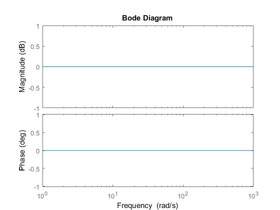
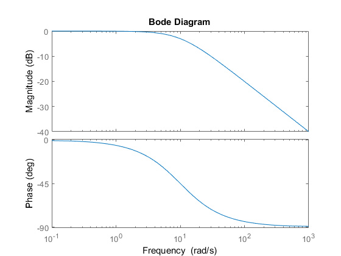
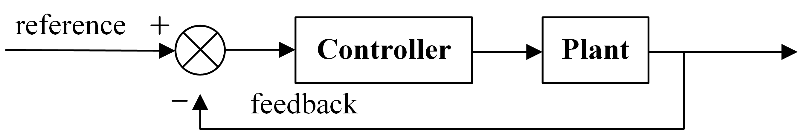

从伯德图说起
在当初学《自动控制原理》的时候，并没有去理解公式背后的意义，囫囵吞枣式地做题、计算、画图。现在想来，传递函数的计算、根轨迹的绘制甚至是伯德图的快速绘制方法都记不得了，但是在实践和仿真中，对于概念的理解更深入了些，所以写下。本文从伯德图说起，讲了以下3个方面：
- 伯德图表示什么
- 开环伯德图表示什么
- 伯德积分定理意味着什么
伯德图表示什么
伯德图是从频域的概念来描述系统的性质、表现的。如果我们考虑最简单的系统——比例环节：
$$G_{p} = K_{p}$$
当 $K_{p} = 1$ 时，其传递函数如下图所示:

那么这张图代表什么呢？代表着任意频率的正弦信号通过比例环节之后输出的信号的幅值依然不变——增益为0dB；同时输出信号和输入信号是同相位的，没有相位延迟。
那么如果我们考虑常见的一阶惯性环节呢：
$$ G_{rc} = \frac{1}{T_{s}s + 1} $$
令$T_{s}=0.1$时，一节惯性环节的伯德图是什么样子的呢？

可见，一阶惯性环节在低频处的增益近似为0dB，而随着频率的增加，增益逐渐下降，而相位也随着频率的增加而滞后，相位滞后的极限为90°。其实一阶惯性环节这样的传递特性对应于电阻电容串联的电路，系统输入为施加在串联阻容上的电压；系统输出为电容两端的电压。如果输入电压为直流电压，那么电容的稳态电压就是直流电压；而如果施加低频正弦电压，那么输出的信号的衰减和相位滞后就会很小；而如果施加高频正弦信号的话，那么输出信号的幅度相对于输入信号就会产生衰减，相位滞后也会随之增大。
那么衰减多少呢？滞后多少呢？对于频率为$\omega$的正弦信号，其增益和相位滞后如下式所示。
$$ Amp = | \frac{1}{T_{s}j\omega + 1} | $$
$$ Phase = angle(\frac{1}{T_{s}j\omega + 1}) $$
开环伯德图——控制系统稳定分析
考虑下图显示的典型的反馈控制系统框图，如果将反馈处切开，那么从给定（Setpoint 或者 Reference）到反馈的传递函数实际上就是自控概念中的开环传递函数了。

因为线性定常系统的性质——叠加性+齐次性——不同频率的输入信号的响应也可以叠加。所以很多时候为什么我们看伯德图呢？因为伯德图反映了系统输入什么样的正弦波之后，会出来什么正弦波呀。而输入信号一般都是可以分解为不同频率和相位的正弦波的叠加啊（想想傅里叶变换？）。
结合上图，对于正弦信号而言，开环传递函数的幅频特性实际上反映的是反馈回来的信号的放大倍数（也可能是缩小）和相角延迟，这个和系统的稳定性有着密切的关系。如果反馈回来的信号为-180°，并且增益大于等于1，那么系统就自然不会稳定。然而在实际系统中，由于系统功率（能量）或者非线性环节的限制、噪声的影响等等，系统的状态可能表现为自激振荡。
而这就是对数稳定判据的一种理解方式了，其实对数稳定判据和奈奎斯特稳定判据殊途同归。
水床效应(waterbed effect)
水床效应实际上就是考虑输出扰动的情况下，系统对于特定频率扰动抑制的局限——如果某种频率范围的扰动被抑制了，那么必然有其他频率范围的扰动被增大了。
为什么呢？伯德敏感度积分如下所示:
$$ \int_{0}^{\infty}{ln|S(j\omega)|d\omega}=\int_{0}^{\infty}{ln|\frac{1}{1+L(j\omega)}|}=\pi\Sigma Re(p_{k}) - \frac{\pi}{2}lim_{s \to \infty}sL(s) $$
其中，$L(s)$ 是系统的环路增益，p_{k}是环路增益L(s)的不稳定极点。
如果
- $L(s)$ 没有不稳定的极点(确保上式被减数为0)
- $L(s)$ 极点比零点多至少2个(确保上式被减数为0)
那么，就有：
$$ \int_{0}^{\infty}ln|S(j\omega)|d\omega=0 $$
所以说，对于扰动的闭环传递函数而言，某些频率范围的增益的抑制（减小），必然会导致其他某些频率范围增益的增大。这里按下去，那里就会鼓起来，即水床效应咯。
毕竟根据“天下没有免费的午餐”定理，获得任何效用都是要付出额外的代价的:)